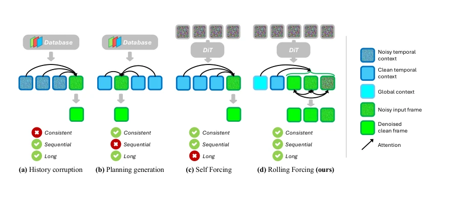
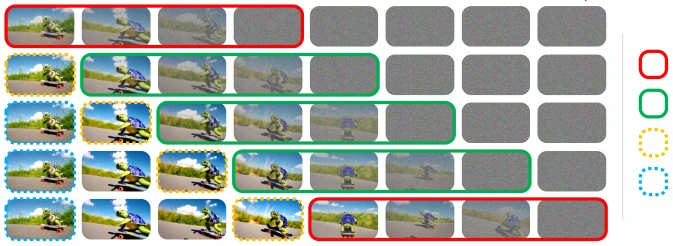
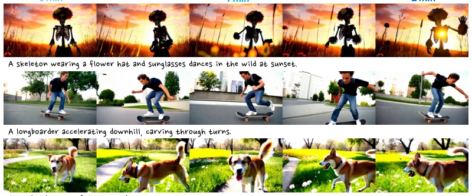
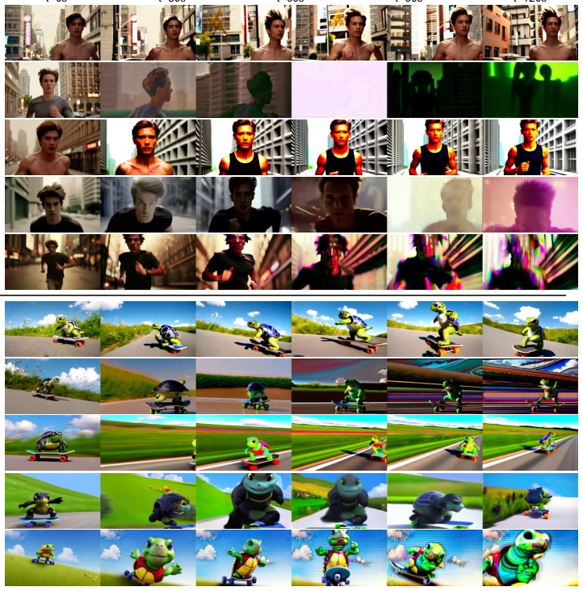
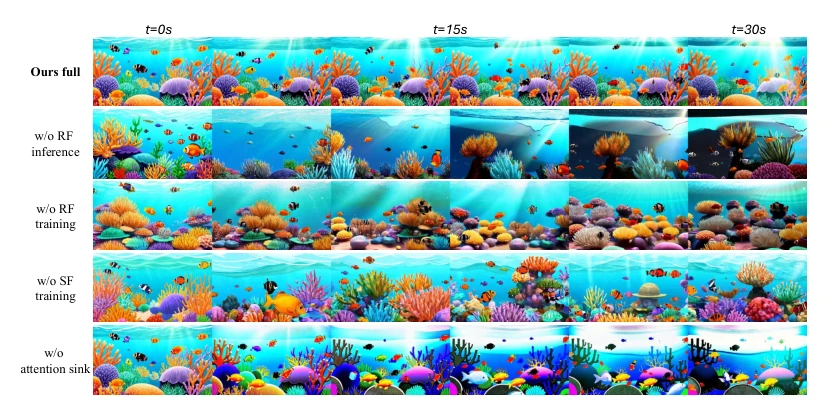
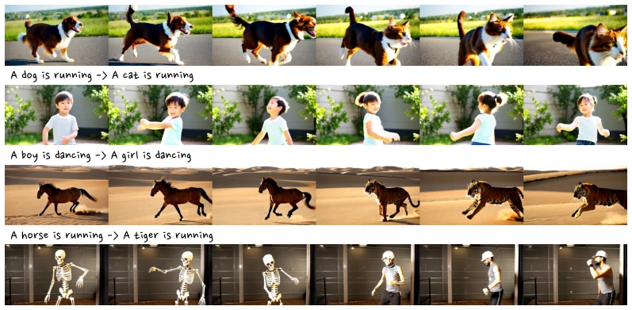
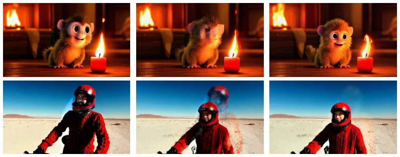

This paper performs a "drift-removal" surgery on autoregressive video generation. Traditional AR models are like a game of telephone; after prolonged transmission, the meaning distorts, and long video generation becomes a disaster where colors and motion collapse. Rolling Forcing attempts to use a "rolling window" to allow frames to mutually correct errors, and also implements an "Attention Sink" to treat the initial frame as an anchor. The experiments are indeed impressive: running for minutes on a single card at 16fps, drift is nearly zero, far superior to Self Forcing. However, there is a critique: bidirectional attention is used within the window, does this count as "semi-causal"? Training uses only 5-second clips yet can generate minutes; this generalization ability seems somewhat metaphysical, is it overfitting? Additionally, although claimed to be real-time, larger windows consume more VRAM, so actual deployment depends on hardware. Overall, it is a pragmatic victory for video stream generation, but there is still a gap from a true "physics-understanding" world model, after all, it merely generates pixels rather than understanding causality.
研究动机Motivation
交互式世界模型和神经游戏引擎需要低延迟、长时序的视频流生成。现有自回归方法（如 Self Forcing [Huang et al., 2025], CausVid [Yin et al., 2025]）虽然能实时生成，但严格因果性导致误差累积，长视频质量严重下降。历史污染（History Corruption）[Chen et al., 2024; Guo et al., 2025] 牺牲了时间一致性。规划生成（Planning Generation）[Zhang & Agrawala, 2025; Xiang et al., 2025] 破坏了严格顺序，不适合流式。作者想在不牺牲实时性的前提下，解决长视频漂移问题。
Interactive world models and neural game engines require low-latency, long-sequence video stream generation. Existing autoregressive methods (such as Self Forcing [Huang et al., 2025], CausVid [Yin et al., 2025]) can generate in real-time, but strict causality leads to error accumulation, causing severe quality degradation in long videos. History Corruption [Chen et al., 2024; Guo et al., 2025] sacrifices temporal consistency. Planning Generation [Zhang & Agrawala, 2025; Xiang et al., 2025] disrupts strict order, making it unsuitable for streaming. The authors aim to solve the long-video drift problem without sacrificing real-time performance.

Figure 2: Different paradigms in autoregressive video generation. History corruption (Chen et al., 2024; Guo et al., 2025) in (a) compromises temporal consistency, while planning generation (Zhang & Agrawala, 2025; Xiang et al., 2025) in (b) is incompatible with sequential streaming video gen- eration. Self Forcing (Huang et al., 2025) in (c) can achieve consistent sequential streaming but suffers from severe error accumulation while generating long videos. The proposed Rolling Forcing in (d) supports streaming long video generation with superior temporal consistency and minimal error accumulation.
The Rolling Forcing framework comprises three core designs, with the overall process being streaming autoregressive diffusion. First is rolling window joint denoising: abandoning single-frame iteration, instead processing multiple frames simultaneously within the window, where window length equals the denoising steps T. Frames within the window are connected via bidirectional attention, with noise levels increasing. This allows frames to mutually correct, suppress error propagation, and each forward pass can emit one frame, ensuring real-time performance. Second is the Attention Sink mechanism: using the initial frame's KV cache as a global context anchor, dynamically adjusting RoPE to prevent position shift, and keeping recent frame KV cache for short-term consistency. This solves the long-range drift problem. Finally, an efficient training algorithm: DMD loss calculation is expensive, adopting non-overlapping window sampling gradients, and mixing Self Forcing training to regularize camera motion. Specifically, the denoising window length equals the denoising steps T; when the window rolls, the noise level of the previous frame aligns with the next frame. KV Cache is divided into recent (short-term) and initial (long-term). RoPE dynamic adjustment ensures relative positions remain fixed. During training, gradients are calculated only in partial windows to avoid OOM. Mixed training prevents unnatural camera motion.

Figure 3: Illustration of the Rolling Forcing denoising process with T = 4. Rolling Forcing jointly denoises a short window of consecutive frames that are assigned progressively higher noise levels and connected by bidirectional attention. The KV cache of recent frames is preserved as temporal context to maintain short-term consistency, while the KV cache of the initial frames is preserved as global context to ensure long-term consistency. During training, only a subset of denoising windows requires gradient computation, as highlighted by the red windows. These windows are mutually exclusive yet collectively cover all video frames.
Based on Wan2.1-T2V-1.3B, using the VidProM dataset. Comparison baselines include SkyReels-V2, MAGI-1, CausVid, Self Forcing. Evaluation metrics are VBench and Quality Drift ΔQuality Drift. Results show Rolling Forcing has the minimum drift (0.01), other baselines are all greater than 1.6. Single card 16fps, latency 0.76s. Ablation experiments prove rolling window, mixed training, and Attention Sink are all effective. Fig 4 shows long video quality is maintained well, Fig 5 verifies the contribution of each module. Fig 7 demonstrates the importance of RoPE adjustment.

Figure 1: Rolling Forcing performs real-time streaming text-to-video generation at 16 fps on a single GPU and is capable of producing multi-minute-long videos with minimal error accumulation. More results, code, and demo can be found at the project page.

Figure 4: Qualitative comparisons. We compare Rolling Forcing with representative open-source autoregressive video generation models on long video generation.

Figure 5: Ablation studies on rolling diffusion window, mixed training strategy, and attention sink.

Figure 6: Interactive Video Streaming. Rolling Forcing allows the users to change prompts while streaming to steer the video content.

Figure 7: Fixed RoPE indices produce strong “jumping” artifacts, where the video abruptly resets to the initial frame during streaming.